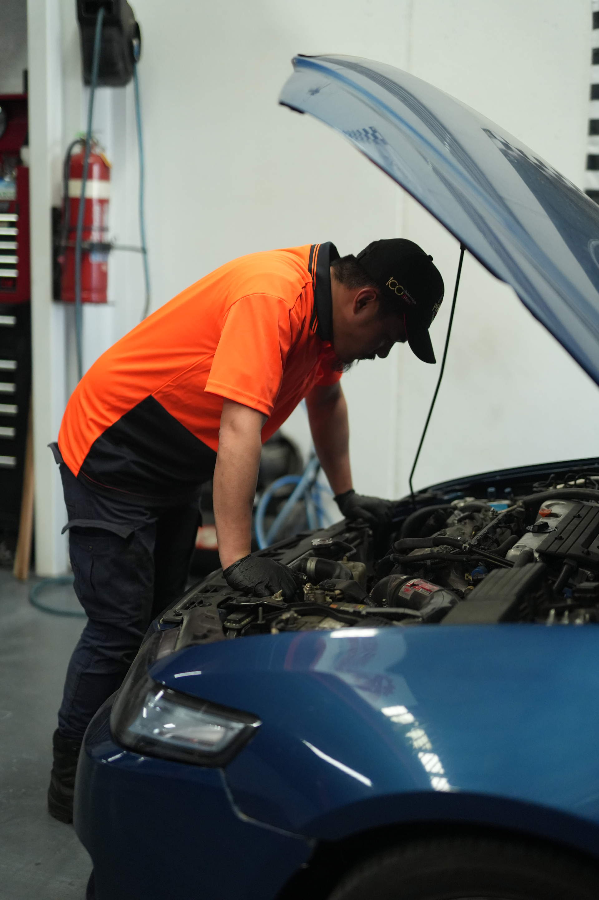

About ServiceLane Auto
Looking for a reliable mechanic near me in Condell Park? Service Lane Auto provides professional car servicing, mechanical repairs and diagnostics for drivers, businesses and fleet operators throughout Condell Park and surrounding South West Sydney suburbs. Our experienced team provides car servicing, brake repairs, mechanical repairs, vehicle diagnostics and preventative maintenance, helping keep your vehicle safe, reliable and on the road. At Service Lane Auto, we focus on quality workmanship, honest advice and clear communication. We properly inspect your vehicle, explain what needs attention and keep you informed throughout the process, without unnecessary surprises.
Whether you’re searching for a mechanic in Condell Park, need a car service near you, have a warning light on your dashboard or need a trusted workshop to maintain your business fleet, Service Lane Auto is ready to help. Conveniently located in Condell Park, NSW, we service customers from Bankstown, Yagoona, Revesby, Padstow, Milperra and surrounding South West Sydney areas. Looking for a Mechanic Near You? Choose Service Lane Auto in Condell Park for reliable servicing, diagnostics and mechanical repairs. Book your service with Service Lane Auto today.
Got Questions?
Your vehicle’s recommended service intervals depend on its make, model, age and kilometres travelled. If you’re unsure, contact Service Lane Auto and our Condell Park mechanics can help determine when your next service is due.
Yes. Service Lane Auto provides fleet servicing and mechanical maintenance in Condell Park for businesses and vehicle operators. We can assist with regular servicing, maintenance, diagnostics and documented vehicle inspections to help keep your fleet on the road.
Our workshop is located in Condell Park, NSW, making us a convenient local mechanic for customers in Bankstown, Yagoona, Revesby, Padstow, Milperra and surrounding South West Sydney suburbs.
If you’re looking for a mechanic near me in Condell Park, simply contact Service Lane Auto to arrange your booking. Whether you need a car service, brake repair, diagnostics, filter replacement or general mechanical work, our team is ready to help.